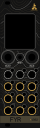

1392 moh.m a.s.l.
Pulsen alt annet følger.
The pulse everything else follows.
KjøpBuyTekniske dataSpecifications
| BreddeWidth | 8 HP |
|---|---|
| HøydeHeight | 3U |
| TypeType | digitaldigital |
| KotehøydeSpot height | 1392 moh.m a.s.l. · Stetind |
| StrømPower | ±12 V |
| På lagerIn stock | NeiNo |